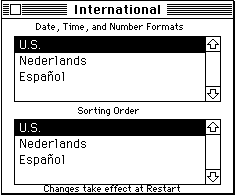
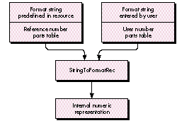

Have you ever wondered how to get your program to display numbers in a way that
satisfies Macintosh users all around the world? This article tells you what users
expect and shows you how to use the Macintosh Toolbox to correctly format numbers,
taking the needs of both your program and the user into account. It also shows how to
interpret numbers entered by the user.
When you develop an application, you usually have some opinion about the format in
which numbers should be presented to the user. However, number formatting
standards differ from country to country (and sometimes even within a country), and
users also may have their own ideas on the subject. Macintosh system software
provides support to format numbers in ways that accommodate both the needs of your
application and local standards, and -- starting with System 7.1 -- also lets the user
control some aspects of number formatting using the Numbers control panel.
This article shows two different ways to format numbers: using a default format for
simple number display, and following the user's specification for more sophisticated
number display. It also shows how to interpret numeric input correctly. This issue's
CD contains an application called Numbers Test that lets you try out these two different
methods of formatting numbers and enter numbers for interpretation. The CD also
contains BuildNumbers, an MPW script that builds an MPW tool that's functionally
equivalent to the application.
Users expect to see numbers in a format that makes sense to them. This challenges the
programmer to accommodate the variations on number formatting that occur around
the world.
The most common system for writing numbers is the decimal system, where numbers
are formed from ten different numerals, with the position of each digit within a
number defining a multiplier for it: 123 = 1*100 + 2*10 + 3*1. However, there
are many local variations on this scheme, and there are some writing systems that
prefer a different style of writing numbers, in which case decimal numbers may or
may not be an acceptable alternative. Systems besides the decimal system that users
may require include Roman numerals (used in many languages to number topics or
title pages) and hexadecimal numbers (familiar to everybody who's ever dropped into
MacsBug), as well as the Japanese and Chinese systems. For details on how these
number formatting systems differ from one another, see "Number Formatting
Variations."
Computers may complicate matters even more by providing multiple character codes
for the same digit. For example, the Macintosh Japanese character set provides both
1-byte and 2-byte encodings of the Latin characters (which are called "Romaji" in
Japanese). They can easily be distinguished on the screen: the 1-byte versions are
narrower than the 2-byte versions, which take up the same widthas Kanji characters.
For interpretation as numbers, however, these different encodings should be
considered equivalent.
Another example is the Macintosh Arabic character set, which defines a set of Arabic
digits with right-to-left orientation in addition to the ASCII digits, which have
left-to-right orientation and are usually displayed with Arabic glyphs when an Arabic
font has been chosen. The right-to-left digits are intended only for text that doesn't
have a numeric meaning, such as software version strings and part numbers, and are
needed to obtain proper line layout in these cases. However, users may not be aware of
this intention and may try to enter numbers using these digits. Later we'll discuss how
to deal with this.
Depending on how sophisticated your application is with regard to numbers, you'll
need to support variations on number formatting in three different situations: simple
number display, number display in a user-specified format, and numeric input.
For simple number display, your application needs to show a given number in a default
format that makes sense to the user. This kind of formatting may suffice for many
applications and is commonly used for dialogs.
For other number-display situations, your application might need to format numbers
according to the user's specification. The user might specify which representation to
use for the number (for example, decimal or traditional Chinese; Thai, Arabic, or
Latin glyphs), the number of digits after the decimal separator, how to indicate
negative numbers, whether to use thousands separators, which currency symbol to
use, and where to place it. This kind of formatting is needed, for example, for
spreadsheets, databases, and page layout applications.
Numeric input is needed in almost any application -- for example, to specify the width
of a page, the number of a page to jump to, or the size of a font. Ideally, your
application should be able to interpret a numeric string in any format that might make
sense to the user, independent of the display formats you use.
Local variations on the decimal system include variations on the shapes of the digits,
representation of negative numbers, the decimal separator, and the thousands
separator.
Latin
Arabic
Thai
Many other variations exist, especially for noninteger numbers. Here's a sample of
local variations on how one negative number is represented in the decimal system:
Arabic
French -1 234,56
German -1.234,56 Greek (1 234.56)
Japanese (1,234.56)
Swiss French -1'234.56

Thai
U.S. -1,234.56
In the Roman system, numbers are formed from letter digits representing the
numbers shown below.
| M | 1000 |
| D | 500 |
| C | 100 |
| L | 50 |
| X | 10 |
| V | 5 |
| I | 1 |
Originally the digits of the number were simply added up to arrive at the value of the
number, and digits were sorted in decreasing order within the number (so 9 = VIIII).
Later a convention was added that positioning one of the digits C, X, or I before a
higher-valued digit means that its value is to be subtracted instead of added (so 9 =IX).
The Japanese and Chinese systems represent numbers in various ways. In horizontal
writing, the decimal system with Latin glyphs is commonly used. Ten thousands
separators were once used instead of thousands separators and are still used in some
very traditional quarters, but accountants in Japan now use thousands separators
instead. In the traditional vertical writing preferred by native speakers, however,
Chinese characters are used without separators. A mapping of decimal numbers to
Chinese digits is acceptable; however, a direct representation of the numbers as they
are spoken is preferred. The number 45000, for example, is represented in the
decimal style on the left and in the traditional style on the right:
4
4
5
ten thousand
0
5

0
thousand
0
Macintosh system software supports number formatting with international resources,
the Numbers control panel (in System 7.1), and the Text Utilities routines.
Unfortunately, the functionality provided doesn't cover all the needs just described --
it's limited to decimal numbers and a maximum of two encodings per script. This
means that, for instance, Chinese vertical numbers aren't supported; with the advent
of QuickDraw GX, which supports vertical text, this problem is becoming more urgent.
There are some interesting details you'll have to understand to make the best use of the
functionality provided.
INTERNATIONAL RESOURCES
International resources of two types, 'itl0' and 'itl4', provide data that helps in
formatting numbers.
If multiple scripts are installed on one machine, each script has at least one resource
of each type and designates one resource of each type as the default for the script. The
default resources for the system script (the script that supports the language your
system is localized for) define the systemwide default. If GetIntlResource (IUGetIntl)
is used to access a resource, the script whose resources are returned depends on the
font in the current graphics port and the settings of the international resources
selection flag. To avoid surprises, it's usually better to ask for resources of specific
scripts; the InitializeDefaultNumberSeparators routine, discussed later, does this.
All Macintosh scripts support the use of the ASCII digits ($30-$39), and some
scripts provide an additional set of digits in an alternate numeral table. The Japanese
'itl4' resource contains the 2-byte Romaji digits; the Arabic 'itl4' resource, the
right-to-left digits; and the Thai 'itl4' resource, the Thai digits. Because only one
alternate numeral table is allowed per 'itl4' resource, you won't find in the Japanese
'itl4' resource the Chinese numerals used in the Japanese script. Unfortunately, not
all scripts that have multiple sets of digits define them in the 'itl4' resource; for
instance, the Chinese versions of System 7.1 don't make use of the alternate numeral
table but only support the ASCII digits.
THE NUMBERS CONTROL PANEL
The Numbers control panel (in System 7.1) lets users select the default number
format and define customized decimal and thousands separators, as well as the
currency symbol. In earlier systems, the International control panel (which was
shipped only with certain localized versions of system software) allowed the user to
select the default number format but didn't provide for customization. (See Figure
1.)

Figure 1The International and Numbers Control Panels
To correctly access the international resources and interpret their contents, it helps
to know how the control panels affect the resources. The behavior of the control panels
has changed significantly from system software versions 7.0 and 7.0.1 to version 7.1.
The International control panel in versions 7.0 and 7.0.1 lets the user select only the
language whose number formatting rules apply; it does not allow modification of the
rules. Selecting a language makes the corresponding region's 'itl0' resource the default
resource for its script, so that all its features take effect. The 'itl4' resources are not
affected.
The Numbers control panel in System 7.1 lets the user select a predefined regional
version or define a custom version of the number format. The first time the control
panel is opened after installing System 7.1, it creates a new 'itl0' resource in the
System file based on the predefined default 'itl0' resource of this version of system
software and makes this new resource the default for the system script. From then on
it keeps the user's format definition in this personalized 'itl0' resource, whether it's
selected from predefined formats or defined as a custom format. When the user selects
a different regional version, all items of that region's 'itl0' resource that are
represented in the control panel are copied into the personalized 'itl0' resource; other
features defined in the 'itl0' resource are ignored. This means that the decision, for
example, whether to show negative numbers with a minus sign or in parentheses is not
affected by the selection. The default selection of the 'itl4' resource isn't changed;
however, the default 'itl4' resource is modified to use the personalized 'itl0'
resource's decimal and thousands separators in its number parts table.
There's one problem with the Numbers control panel that you have to be aware of: it
doesn't impose any constraints on the selections for the decimal and thousands
separators, other than not allowing the user to enter 2-byte characters. The user can,
for example, select a digit, the minus sign, no character at all, or a character that
conflicts with the inner workings of the Text Utilities routines for interpreting
format specifications. To make sure that your application functions correctly, you
have to check whether the separators make sense before using them.
The sample code discussed in this article assumes that you don't check for changes of
the resources while your application is running, so it gets all necessary information
at launch time and caches it. This way, changes made with the control panel will not
be immediately reflected in your application, but you also avoid the problem of
inconsistent updates. This problem can arise if you always use the most current
information, and the user changes, say, the decimal separator while your application
is displaying numbers in a window; in this case, it could happen that after redrawing a
part of your window you display one decimal separator in the updated region and
another one in the rest of the window.
THE TEXT UTILITIES ROUTINES
The Text Utilities routines format or interpret numbers according to format
specifications that are given by format strings and that can be quite sophisticated so
that context-dependent variations can be taken into account. Format strings are used in
some spreadsheet and database applications and look like this:
'###.###,##;(###.###,##);0.##'
By default, the Text Utilities routines assume that numbers are encoded by ASCII digits
($30-$39) and displayed using Latin glyphs. However, we'll see that there's a way to
have the routines support the set of digits defined in the alternate numeral table in the
'itl4' resource, in addition to ASCII digits.
The Text Utilities routines assume a localized format string. There's only limited
support for automatically adjusting a generic format string to local customs or the
user's preferences: the routines can replace characters by using a different number
parts table but cannot convert to a different structure of the number format. For
example, the indicator of negative numbers can't be switched automatically from the
minus sign to parentheses. This is a problem if your application isn't localized for all
the regions supported by Macintosh system software.
Now you know what users expect, what your application's needs are, and what support
Macintosh system software offers when it comes to number formatting. You've seen
that the Toolbox doesn't provide a solution for all your needs, so you'll have to extend it
in some cases. We'll now look at how you can make the best use of whatis provided to
do simple number display using a default format, to display numbers in a
user-specified format, and to interpret numeric input. The sample code presented
here uses the international resources either directly or in combination with the Text
Utilities routines to make up for at least some of the shortcomings of the Text Utilities
routines.
First I'll show you how to use the 'itl0' resources in conjunction with the Text
Utilities or Standard Apple Numerics Environment (SANE) routines to display
numbers in the default number format. This method provides a simple solution for
cases of simple number display.
The following code takes the localized or user-defined decimal and thousands
separators into account. It assumes that numbers are written as integer or fixed-point
decimal numbers in the ASCIIcharacter set and displayed in a font of the system script.
It doesn't support Roman numerals, full- width Romaji, Chinese numbers, Thai digits,
or the like. Negative numbers are written with a leading minus sign; parentheses
aren't supported.
In some cases you won't want to use the default number formatting definition but
instead will want to use the definition for a specific language. This case isn't taken into
account in this version.
We start by defining the variables used to cache the default decimal and thousands
separators. They must be initialized by calling InitializeDefaultNumberSeparators
when the application is launched.
PROGRAM Numbers;
USES Script, Resources, Memory, Errors, GestaltEqu, Packages, SANE,
UFailure;
VAR gDefaultDecimalSeparator: Char;
gDefaultThousandsSeparator: Char;
We call the procedure InitializeDefaultNumberSeparators in the application's
initialization sequence to initialize both gDefaultDecimalSeparator and
gDefaultThousandsSeparator from the default 'itl0' resource of the system script. If
your application tracks changes in the Script Manager state, you can reinitialize the
variables by calling InitializeDefaultNumberSeparators again. Because the Numbers
control panel lets the user select any characters as the separators, we verify that the
selection doesn't conflict with our use of the separators. If no character was specified
in the control panel, the 'itl0' resource contains Char(0). It's OK not to have a
thousands separator, but you can't display floating- point numbers without a decimal
separator. We don't use GetIntlResource (IUGetIntl), so the outcome of this routine
doesn't depend on the font in the current graphics port or the international resources
selection flag.
PROCEDURE InitializeDefaultNumberSeparators;
VAR theItl0Handle: Handle;
BEGIN
theItl0Handle := GetResource('itl0', GetScript(smSystemScript,
smScriptNumber));
FailNILResource(theItl0Handle);
WITH Intl0Hndl(theItl0Handle)^^ DO BEGIN
IF (decimalPt IN ['0'..'9', Char(0), '-']) OR (thousSep IN
['0'..'9', '-']) OR (decimalPt = thousSep) THEN
FailOSErr(paramErr);
gDefaultDecimalSeparator := decimalPt;
gDefaultThousandsSeparator := thousSep;
END;
END;
The FailNILResource, FailNIL, FailOSErr, and FailResError routines check for errors
and initiate error handling if necessary; they were originally introduced in MacApp. In
this sample code, I don't provide complete error handling, but only call these routines
to indicate where a real application would have to be prepared to handle errors.
The procedure LocalizeNumberString takes a string representing a number as it's
produced by a nonlocalizable conversion routine and localizes it by adjusting the
decimal separator (if there is one) and inserting thousands separators.
PROCEDURE LocalizeNumberString(VAR theString: Str255);
VAR boundary: Integer;
separatorString: String[1];
minusOffset: Integer;
BEGIN
separatorString := ',';
separatorString[1] := gDefaultThousandsSeparator;
First, we find the boundary between the integer and fractional parts. If there's a
period, that's the boundary (and we fix the decimal separator right away); otherwise
it's the end of the string.
boundary := Pos('.', theString);
IF boundary <> 0 THEN
theString[boundary] := gDefaultDecimalSeparator
ELSE
boundary := Length(theString) + 1;
Second, we insert as many thousands separators as necessary, if the user has specified
one. We take into account that we don't want to insert a thousands separator right after
a minus sign.
IF gDefaultThousandsSeparator <> Char(0) THEN BEGIN
IF theString[1] = '-' THEN
minusOffset := 1
ELSE
minusOffset := 0;
WHILE boundary > 4 + minusOffset DO BEGIN
theString := Concat(Copy(theString, 1, boundary - 4),
separatorString,
Copy(theString, boundary - 3,
Length(theString) - boundary + 4));
boundary := boundary - 3;
END;
END;
END;
And now we finally come to the two routines that an application will call directly to
format numbers into strings. The first one is intended for integer numbers, the second
one for floating-point numbers.
IntegerToLocalString converts the given integer into a string representation using the
thousands separator specified by localization or by the user. It calls NumToString, a
Text Utilities routine.
PROCEDURE IntegerToLocalString(theNumber: LongInt;
VAR theString: Str255);
BEGIN
NumToString(theNumber, theString);
LocalizeNumberString(theString);
END;
ExtendedToLocalString converts the number into a fixed-point representation using
the decimal separator specified by localization or by the user. The number of digits to
be used after the decimal separator is specified in decimalDigits. DecForm and
Num2Str are defined by SANE.
PROCEDURE ExtendedToLocalString(theNumber: Extended;
decimalDigits: Integer; VAR theString: Str255);
VAR theDecForm: DecForm;
BEGIN
WITH theDecForm DO BEGIN
style := fixedDecimal;
digits := decimalDigits;
END;
Num2Str(theDecForm, theNumber, DecStr(theString));
LocalizeNumberString(theString);
END;
That's all there is to the simple case.
Now I'll show you how to use the Text Utilities routines and 'itl4' resources to format
numbers according to the user's specification. The idea is that your application comes
with a range of predefined format strings, from which the user can pick one. The
application might also let users enter their own format strings. Of course, these
strings aren't exactly the most user-friendly way to define a number format, so if
your application is intended for novice users you should hide them behind a friendlier
user interface. Before we dive into the code, let's look at a few obstacles that the Text
Utilities routines provide for us and consider how we can work around them.
First of all, the Text Utilities routines expect to work with localized format
specifications. They aren't able to take, for example, the standard number format used
in the United States and translate it into the standard number format used in Greece,
which uses parentheses to indicate negative numbers. This will be a problem if your
application doesn't get localized for all regions for which Macintosh system software is
localized and if some versions of your application get used in regions for which they
aren't localized. To work around this problem, the range of format strings that a given
version of the software offers should include all formats commonly used in any of the
regions in which this version might be used, and your application should also let users
enter their own format strings.
Second, the format strings are interpreted with reference to the characters defined by
the number parts table that you pass into the Text Utilities StringToFormatRec
routine. You have to be sure to use a number parts table whose characters are
compatible with the strings you provide. Currently, only the characters defined by the
U.S. 'itl4' resource are documented. To deal with this situation, we'll take advantage of
the fact that the U.S. 'itl4' resource is always available and will use its characters as a
stable reference point. We'll define all format strings using the U.S. characters, and
use the number parts table in the U.S. 'itl4' resource to interpret them.
Third, if you match a format string against the number parts table of the default 'itl4'
resource, you'll have to make sure that your application doesn't break if the user
defines a custom number format and the Numbers control panel patches the new
decimal and thousands separators into the 'itl4' resource. Therefore, we'll have to
undo all changes that the user may have made with the control panel before we can use
an 'itl4' resource to interpret our format strings.
Unfortunately, there's no guarantee that other parts of the number parts table won't
be modified by the Numbers control panel in the future. This means that a format
string that can be converted under the current mechanism may become unconvertible
in the future, just as a valid 7.0 format string may no longer be recognized by the 7.1
StringToFormatRec routine. There's not much you can do about this until you know it's
happened.
An alternative approach that avoids this problem is to store internal representations
of format specifications instead of format strings in the application's resources. The
internal representations are created by a separate tool that's run on unmodified U.S.
system software during the development process. This approach, however, makes it
more difficult for localizers to look at the format strings and to create new ones, and
also makes it slightly more difficult to use an additional feature that we'll discuss
later, in the "Converting Format Strings" section. I therefore prefer to keep format
strings in the application and convert them at run time.
So, to display numbers in a user-specified format, we do the following:
Inside Macintosh: Text , pages 5-35 to 5-44, goes into great detail about how to
format numbers according to the user's specifications. The approach I describe here
differs somewhat from that approach. Instead of assuming that all format strings are
localized for the language supported by the default 'itl4' resource, we prepare the
application to support format strings from two different sources, the application
resources and the user, by using separate number parts tables for them. This is shown
in Figure 2, which essentially replaces the upper left portion of the data flow diagram
on page 5-37 of Inside Macintosh: Text. In all other places where the diagram
inInside Macintosh: Text shows a number parts table, we use the user number parts
table.

Figure 2 Number Formatting Using Two Different Number Parts Tables
DEFINING FORMAT STRINGS
Which format strings you provide with your application depends on the countries you
want to target and the specific needs of your users. Here are some sample strings that
you may want to use: * '###,###.##;-###,###.##;0.##' can be used for
floating-point numbers with an absolute value of less than one million, with a
thousands separator and the minus sign for negative numbers, and without padding. *
'###,###.##;(###,###.##);0.##' is similar, but with parentheses to
represent negative numbers, as is customary in some countries. * '+^^^;-^^^;^^^^'
can be used for integer numbers with an absolute value of less than one thousand, with
signs for both positive and negative numbers, and with padding to four places with a
space character as may be necessary for alignment.
When you define the format strings, there are a few things you have to watch out for.
Most important, the predefined format strings shouldn't include any literal text, as
this text is almost guaranteed to be inappropriate for the regions the application isn't
localized for. (Note that it may be inappropriate even for the target region; for
example, you shouldn't embed currency symbols, because many users deal with
foreign currency.)
Also, conversion from U.S. to localized characters really only works for characters
that are listed as separate tokens inInside Macintosh: Text , page B-56, not for
unquoted characters or other text. For example, parentheses are unquoted characters
and don't get converted to the special right-to-leftparentheses used by the Arabic and
Hebrew script systems. As a result, neither a format string that contains parentheses
nor numbers formatted with it display correctly on Arabic, Persian, or Hebrew
system software. To avoid problems like this, make sure to test your software on the
system software for all countries that you want to target.
Finally, the format string specifies the maximum number of predecimal digits in a
formatted number, and the formatting routine will report an error if the number
doesn't fit into the format. This means that your program has to ensure that the format
strings have enough predecimal digits to accommodate all numbers that may need to be
formatted. If the predefined strings you need get too long, you may want to use a
simplified version that you can show to users without scaring them.
SETTING UP THE NUMBER PARTS TABLES
Now we'll set up the number parts tables that we'll use. The reference table is based on
the U.S. 'itl4' resource, but we'll undo all changes that the user may have made with
the control panel. The user table is based on the system's default number parts table
and the user's selections in the Numbers or International control panel.
Again, we assume that your application doesn't check for changes in the Script Manager
state, and therefore we cache the number parts tables that we need at launch time. The
tables are initialized by calling InitializeNumberPartsTables. If the user number
parts table is an unmodified U.S. table, only one table is allocated, and both pointers
reference this table.
VAR gUserNumberPartsTable: NumberPartsPtr;
gReferenceNumberPartsTable: NumberPartsPtr;
VAR gSystemVersion: LongInt;
The function GetUserItl4 gets the 'itl4' resource that matches the user's selection in
the Numbers or International control panel. This isn't necessarily the default 'itl4'
resource.
FUNCTION GetUserItl4: Handle;
VAR theItl4Handle: Handle;
systemScript: ScriptCode;
tableOffset, tableLength: LongInt;
theItl0Handle: Handle;
theResID: Integer;
theResType: ResType;
theResName: Str255;
System 7 provides a new routine, GetIntlResourceTable (IUGetItlTable), that returns
the number parts table of the default 'itl4' resource. However, the effect of the
International control panel on the default 'itl4' resource differs from that of the
Numbers control panel, as explained earlier, and we take some extra steps to achieve
the behavior that best matches the control panel's behavior. The International control
panel selects an 'itl0' resource but doesn't affect the 'itl4' resource. If we continued
using the default 'itl4' resource, the user wouldn't see any effect from the control
panel selection. To make up for this, we'll try to find an 'itl4' resource that matches
the 'itl0' that the user selected, and use it instead of the default 'itl4'. The Numbers
control panel, on the other hand, updates the decimal and thousands separators in the
'itl4' resource, and changes in the default 'itl0' resource are limited to the features
visible in the control panel. Therefore, the best solution in this case is to use the
default 'itl4' resource.
BEGIN
IF gSystemVersion >= $0710 THEN BEGIN
systemScript := GetEnvirons(smSysScript);
IUGetItlTable(systemScript, iuNumberPartsTable, theItl4Handle,
tableOffset, tableLength);
FailNILResource(theItl4Handle);
END
ELSE BEGIN
The workaround used here is to ask the system for the 'itl0' resource and then try to
find an 'itl4' resource with a matching number. Some countries, however, have
multiple 'itl0' resources and only one 'itl4' resource, or they don't have any 'itl4'
resource of their own (they use the U.S. version). To cover these cases, we have to go
through an exception table.
theItl0Handle := IUGetIntl(0);
FailNILResource(theItl0Handle);
GetResInfo(theItl0Handle, theResID, theResType, theResName);
theItl4Handle := GetResource('itl4', theResID);
IF ResError = resNotFound THEN BEGIN
The exceptions in system software versions 7.0 and 7.0.1 are as follows:
Note that 'itl0' 56 occurs in both the Czechoslovakian and Polish versions. For all
other cases, we try the U.S. resource.
CASE theResID OF
6: theResID := 5; { Netherlands }
30777, 56, 57: theResID := 30776; { Czechoslovakia }
OTHERWISE theResID := verUS;
END;
theItl4Handle := GetResource('itl4', theResID);
FailNILResource(theItl4Handle);
END
ELSE
FailNILResource(theItl4Handle);
END;
GetUserItl4 := theItl4Handle;
END;
In the procedure InitializeDefaultNumberSeparators we've verified that the characters
the user has specified as decimal and thousands separators don't conflict with the use of
these separators for default formatting. Here, we have to take one additional step: the
Text Utilities routines for user- specified formatting don't work if the same character
is used for different purposes in the number parts table. For instance, a character
can't be used both as the decimal separator and to represent digits in a format string. If
the routines find a number parts table they don't like, they return the fBadPartsTable
result. The procedure CheckDefaultNumberSeparators uses this to check for problems
in the user number parts table (which contains the default separators) at application
initialization time. In real life, your application should produce a more meaningful
message explaining to the user what went wrong and then should quit.
PROCEDURE CheckDefaultNumberSeparators(userNumberPartsTable:
NumberPartsPtr);
CONST testString = '0';
VAR formatRecord: NumFormatString;
result: FormatStatus;
BEGIN
result := Str2Format(testString, userNumberPartsTable^,
formatRecord);
IF FormatResultType(result) <> fFormatOK THEN
FailOSErr(paramErr);
END;
The procedure ExtractNumberPartsTable is used by the InitializeNumberPartsTables
routine to extract a number parts table from an 'itl4' resource.
FUNCTION ExtractNumberPartsTable(theItl4Handle: Handle):
NumberPartsPtr;
VAR tableOffset: LongInt;
tableLength: LongInt;
theTable: Ptr;
BEGIN
WITH NItl4Handle(theItl4Handle)^^ DO BEGIN
tableOffset := defPartsOffset;
tableLength := defPartsLength;
END;
theTable := NewPtr(tableLength);
FailNIL(theTable);
LoadResource(theItl4Handle);
{ Might have been purged since we got hold of it }
FailResError;
BlockMove(Ptr(LongInt(theItl4Handle^) + tableOffset), theTable,
tableLength);
ExtractNumberPartsTable := NumberPartsPtr(theTable);
END;
The procedure InitializeNumberPartsTables initializes gUserNumberPartsTable and
gReferenceNumberPartsTable by copying the tables from the respective 'itl4'
resources into nonrelocatable blocks in the heap and cleaning the reference table if
necessary.
PROCEDURE InitializeNumberPartsTables;
VAR userItl4, usItl4: Handle;
BEGIN
userItl4 := GetUserItl4;
usItl4 := GetResource('itl4', verUS);
FailNILResource(usItl4);
gUserNumberPartsTable := ExtractNumberPartsTable(userItl4);
CheckDefaultNumberSeparators(gUserNumberPartsTable);
We check whether the user number parts table is an unmodified U.S. table, so we can
use it as the reference table as well.
IF (usItl4 = userItl4) AND ((gSystemVersion < $0710) OR
((gDefaultDecimalSeparator = '.') AND
(gDefaultThousandsSeparator = ','))) THEN
gReferenceNumberPartsTable := gUserNumberPartsTable
ELSE BEGIN
We need to get the U.S. number parts table and undo any changes that the user may have
made with the Numbers control panel.
gReferenceNumberPartsTable := ExtractNumberPartsTable(usItl4);
gReferenceNumberPartsTable^.data[tokDecPoint].a[1] := '.';
gReferenceNumberPartsTable^.data[tokThousands].a[1] := ',';
END;
END;
The procedure DisposeNumberPartsTables disposes of the global number parts tables.
PROCEDURE DisposeNumberPartsTables;
BEGIN
IF gReferenceNumberPartsTable <> gUserNumberPartsTable THEN
DisposPtr(Ptr(gReferenceNumberPartsTable));
DisposPtr(Ptr(gUserNumberPartsTable));
gReferenceNumberPartsTable := NIL;
gUserNumberPartsTable := NIL;
END;
CONVERTING FORMAT STRINGS
Now that we have the two number parts tables, we're going to use them to do some
conversions. We're going to convert our predefined format strings into the Text
Utilities' internal numeric representation, convert this representation into format
strings that can be displayed to the user, and convert format strings entered by the
user into internal representations.
But first, remember the alternate numerals table mentioned earlier? It's time now to
reveal a previously undocumented feature: if a number parts table used for converting
a format string to its internal numeric representation contains a character other than
"#" as the no-leader format marker, the resulting internal numeric representation
will specify using the alternate numerals.
We can use this knowledge to write a wrapper around the StringToFormatRec
(Str2Format) routine that temporarily replaces the no-leader format marker,
adjusts the format string to use the replacement character as well, calls
StringToFormatRec, and reverts the number parts table to its original state. A
convenient replacement character is "1," because digits are very unlikely to be used
for any other purpose in any version of the number parts table. As the character code
for "#" is in a range that isn't used for the bytes of 2-byte characters, we don't have
to check for 2-byte characters here.
Here's what the wrapper routine looks like:
PROCEDURE StringToFormatRecord(formatString: Str255;
useAlternateNumerals: Boolean;
theNumberPartsTable: NumberPartsPtr;
VAR formatRecord: NumFormatString);
VAR result: FormatStatus;
oldChar: WideChar;
i: Integer;
BEGIN
IF useAlternateNumerals THEN BEGIN
oldChar := theNumberPartsTable^.data[tokNonLeader];
theNumberPartsTable^.data[tokNonLeader].b := Ord('1');
FOR i := 1 TO Length(formatString) DO
IF formatString[i] = '#' THEN
formatString[i] := '1';
END;
result := Str2Format(formatString, theNumberPartsTable^,
formatRecord);
IF useAlternateNumerals THEN
theNumberPartsTable^.data[tokNonLeader] := oldChar;
IF FormatResultType(result) <> fFormatOK THEN
FailOSErr(paramErr);
END;
When do you use alternate numerals? First you have to find out whether the user 'itl4'
resource you're using supports alternate numerals. You can use the following routine
to do this. If it returns TRUE, you should let the user make the final decision whether
to use the alternate numerals for output -- you can't take for granted that they're
always preferred over the ASCII digits. For input, it probably makes sense to accept
them without bothering the user first. An exception is the alternate numerals in
bidirectional scripts, where the internal representation of the number won't match
what the user sees on the screen. You probably shouldn't accept these digits.
FUNCTION HasAlternateNumerals
(aNumberPartsTable: NumberPartsPtr): Boolean;
BEGIN
HasAlternateNumerals :=
aNumberPartsTable^.altNumTable.data[0].b <> Ord('0');
END;
Obviously, the decision whether to use alternate numerals has to be made at run time.
This is the second reason I recommended storing format strings and not internal
representations in the application: with internal representations, you would have to
store both versions and select the right one at run time; with format strings, you only
store one version and decide at run time how to convert it.
Given this preparation and the two number parts tables, the remaining steps are
straightforward. The following routines do no more than call StringToFormatRecord
and FormatRecToString with the appropriate number parts table and check for errors
that might occur.
PredefinedStringToFormatRecord converts a predefined format string using the
standard U.S. number parts table into an internal numeric representation.
PROCEDURE PredefinedStringToFormatRecord
(predefinedFormatString: Str255;
useAlternateNumerals: Boolean;
VAR formatRecord: NumFormatString);
BEGIN
StringToFormatRecord(predefinedFormatString,
useAlternateNumerals,
gReferenceNumberPartsTable, formatRecord);
END;
FormatRecordToUserString converts an internal numeric representation into a format
string that can be displayed to the user.
PROCEDURE FormatRecordToUserString(formatRecord: NumFormatString;
VAR userFormatString: Str255);
VAR result: FormatStatus;
positions: TripleInt;
BEGIN
result := Format2Str(formatRecord, gUserNumberPartsTable^,
userFormatString, positions);
IF FormatResultType(result) <> fFormatOK THEN
FailOSErr(paramErr);
END;
UserStringToFormatRecord converts a format string entered by the user into an
internal numeric representation.
PROCEDURE UserStringToFormatRecord(userFormatString: Str255;
useAlternateNumerals: Boolean;
VAR formatRecord: NumFormatString);
BEGIN
StringToFormatRecord(userFormatString, useAlternateNumerals,
gUserNumberPartsTable, formatRecord);
END;
FORMATTING NUMBERS
After all the preparations, the formatting itself is trivial. FormatNumber formats
theNumber into a string, using the internal numeric representation given and the user
number parts table.
PROCEDURE FormatNumber(theNumber: Extended;
theFormatRecord: NumFormatString;
VAR theString: Str255);
VAR result: FormatStatus;
BEGIN
result := FormatX2Str(theNumber, theFormatRecord,
gUserNumberPartsTable^, theString);
IF FormatResultType(result) <> fFormatOK THEN
FailOSErr(paramErr);
END;
Now let's look at conversions in the opposite direction. When the user enters a
number, your application receives a numeric string that it has to convert into a
number. This could be quite a difficult task, given that a user may pick a rather
arbitrary format (and remember, Macintosh users are generally inclined to do things
their own way). Unfortunately, the Toolbox doesn't provide a routine that simply
converts an arbitrary numeric string to a number; your application always has to
specify the acceptable format.
We can reasonably make some simplifying assumptions: If your application doesn't
support output in formats other than ASCII digits, it's probably acceptable to apply the
same restriction to the input formats that can be used. And if your application uses
only the default format for display, you can also get away with allowing input in this
format only, although it would be nicer to accept input in any format the user prefers.
If your application supports user-specified number formats, however, it should be
prepared to accept input in any currently defined format, and probably in some
variations of them, plus the default format.
The Toolbox provides three routines that convert numeric strings into numbers.
StringToNum can parse integer numbers but can't deal with anything that goes beyond
a sequence of decimal digits that's possibly preceded by a sign. The SANE routine
Str2Num can parse floating-point numbers and does detect erroneous input, but it
assumes the period as the decimal separator and doesn't support thousands separators.
Finally, StringToExtended is supposed to support input of numeric strings in a
localized format, but it can deal with only one format at a time and has several other
shortcomings that we'll look at later.
We'll take the same approach as with number display and provide separate routines
that can deal with the default number format and with user-specified formats.
INTERPRETING NUMBERS IN THE DEFAULT NUMBER FORMAT
This solution restricts user input to something that's very close to the default number
format. Then we can simply reverse the "localization" process done for the default
format -- that is, strip thousands separators and modify the decimal separator -- and
call the StringToNum routine or SANE directly to interpret the number.
The procedure UnlocalizeNumberString checks whether theString is a legal number
string, strips all thousands separators, and replaces the default decimal separator
with a period. As the default number format consists only of ASCII digits, the minus
sign, and thousands and decimal separators (which are limited to one byte by the 'itl0'
resource), we don't have to worry about 2-byte characters here if we walk the string
and check each character (we would have to worry if we used a string search routine).
PROCEDURE UnlocalizeNumberString(VAR theString: Str255;
allowDecimal: Boolean);
VAR delta: Integer;
i: Integer;
theChar: Char;
BEGIN
delta := 0;
FOR i := 1 TO Length(theString) DO BEGIN
theChar := theString[i];
IF (theChar >= '0') & (theChar <= '9') THEN
theString[i - delta] := theChar
ELSE IF (theChar = '-') & (i = 1) THEN
theString[i - delta] := theChar
ELSE IF theChar = gDefaultThousandsSeparator THEN
delta := delta + 1
ELSE IF theChar = gDefaultDecimalSeparator THEN BEGIN
IF allowDecimal THEN BEGIN
allowDecimal := FALSE; { one is enough }
theString[i - delta] := '.';
END
ELSE
FailOSErr(paramErr)
END
ELSE
FailOSErr(paramErr);
END;
theString[0] := Char(Length(theString) - delta);
IF Length(theString) = 0 THEN
FailOSErr(paramErr);
END;
And here we finally come to the two routines that your application will call directly to
interpret numeric strings. The first one is intended for integer numbers, the other
one for floating-point numbers.
LocalStringToInteger converts to an integer a numeric string that we're hoping
represents an integer. The string may contain localized thousands separators.
PROCEDURE LocalStringToInteger(theString: Str255;
VAR theNumber: LongInt);
BEGIN
UnlocalizeNumberString(theString, FALSE);
StringToNum(theString, theNumber);
END;
LocalStringToExtended converts to an equivalent floating-point number a numeric
string that we're hoping represents a fixed-point number. The string may contain
localized thousands and decimal separators.
PROCEDURE LocalStringToExtended(theString: Str255;
VAR theNumber: Extended);
BEGIN
UnlocalizeNumberString(theString, TRUE);
theNumber := Str2Num(theString);
END;
INTERPRETING NUMBERS IN USER-SPECIFIED NUMBER FORMATS
Now we can benefit from some of the work that we did to display a number in a
user-specified number format: we use the same number parts tables and the same
format conversion routines. However, because we can't really constrain users to any
given format for input, we have to allow them at least to use any currently defined
format, including the default format. To do this, your application should try the default
format and all currently defined format strings until it finds one for which the
conversion is successful.
The core of this conversion is the StringToExtended (FormatStr2X) routine, and it
helps to understand how this routine works. You get the most reliable results from
StringToExtended if users enter numbers exactly in one of the three possible formats
given by a format string (for positive and negative numbers and 0). In this case it
returns fFormatOK. If the input string doesn't conform to any of the three formats,
StringToExtended tries to guess: it replaces the default decimal separator in the string
with a period, moves the minus sign to the beginning of the string, and strips some
other punctuation. If the resulting string can be interpreted by SANE,
StringToExtended returns fBestGuess and the number found by SANE; otherwise
StringToExtended returns one of several other values that indicate why the string
cannot be interpreted.
You can control how liberal your application is by either allowing fBestGuess as a
result of StringToExtended or treating it as an error. If you don't allow fBestGuess, the
input string can deviate from the specified format in only the following two ways:
If you allow fBestGuess, the following deviations (and more) are also allowed:
Because the guessing process ignores some of the information entered by the user, it
may behave inconsistently with the behavior shown when the format is OK. For
example, if your format string uses parentheses to indicate negative numbers and also
specifies thousands separators, "(123)" will be read as -123 (with fFormatOK), but
"(1234)" will be read as 1234 (with fBestGuess). The missing thousands separator
causes StringToExtended to go into the guessing pass, and there the parentheses are
stripped instead of being interpreted as the indicator for "negative."
This situation is somewhat unfortunate. On one hand, checking for fFormatOK alone
doesn't give users much freedom to type numbers in their preferred format -- for
instance, where a fractional part is specified, they must at least enter the decimal
separator. On the other hand, allowing fBestGuess may mean that some pretty bizarre
strings are accepted and may lead to inconsistent interpretation of parentheses. It
seems that for integer strings allowing fBestGuess is never a good solution, while for
real values it might be OK as long as you don't support expressing negative numbers
with parentheses. To play it safe, I don't allow fBestGuess in the code that follows.
To provide the appropriate handling and return the desired type of number, here are
two different routines that interpret numeric strings representing floating-point and
integer numbers. They both return Booleans to tell the caller whether theString was
successfully converted.
InterpretExtended interprets a numeric string and converts it to an Extended number.
FUNCTION InterpretExtended(theString: Str255;
theFormatRecord: NumFormatString;
VAR theNumber: Extended): Boolean;
VAR result: FormatStatus;
BEGIN
result := FormatStr2X(theString, theFormatRecord,
gUserNumberPartsTable^, theNumber);
InterpretExtended := FormatResultType(result) = fFormatOK;
END;
InterpretInteger interprets a numeric string that (we hope) represents an integer and
converts it to the equivalent LongInt.
FUNCTION InterpretInteger(theString: Str255;
theFormatRecord: NumFormatString;
VAR theNumber: LongInt): Boolean;
VAR result: FormatStatus;
theExtended: Extended;
CONST
minLongInt = -2147483648;
maxLongInt = 2147483647;
BEGIN
result := FormatStr2X(theString, theFormatRecord,
gUserNumberPartsTable^, theExtended);
IF (FormatResultType(result) = fFormatOK) &
(theExtended >= minLongInt) &
(theExtended <= maxLongint) THEN BEGIN
theNumber := Num2LongInt(theExtended);
InterpretInteger := TRUE;
END
ELSE
InterpretInteger := FALSE;
END;
The Numbers Test application on this issue's CD tests all the routines that we've seen
so far. It's a simple, text-based application that spits out a few numbers in the default
format, converts a few format strings and displays them in the localized version, and
then runs a test that reads in numbers and formats them according to format strings.
In a real program, you would of course get the format strings and the messages from
resources. In case you prefer to play with an MPW tool, you can use the BuildNumbers
script on the CD to build a tool that's equivalent to the application.
One final warning in case you don't check out the source code: Before using the routines
described in this article, your application has to check that it runs on system software
version 7.0 or higher, because the section "Setting Up the Number Parts Tables"
makes some assumptions about this.
If you compare the user expectations described at the beginning of this article and what
we've actually achieved with the Toolbox, you'll find that we've been only partially
successful. The code handles the default number format and some user-specified
customizations, but it's still limited to decimal numbers expressed in ASCII digits and
to additional characters supported by the 'itl4' resource.
You may consider adding code of your own to make your number handling more
flexible. There's an obvious need for support for nondecimal numbers. Many
specialized applications already support Roman numerals or hexadecimal numbers;
your application could similarly support traditional Chinese numbers or decimal
numbers using Chinese digits.
When you add your own number support, you should always design it as an extension to
the facilities provided by system software, not as a replacement. The Macintosh is
being localized into ever more languages to reach ever more customers, and you'll be
more successful if your application is at least as good as system software worldwide.
REFERENCES
NORBERT LINDENBERG is an import from Germany who still wonders why there
are offices in California that don't have windows and need artificial light while the sun
is shining outside, and how Americans can survive on 12 days of vacation a year
instead of the normal six weeks. While a student at the University of Karlsruhe,
Norbert developed the Literate Programming Workshop, which he claims is the best
environment for doing literate programming. (Literate programming is similar to a
develop article in that you combine source code and documentation in one document,
but different because you compile the source code right out of this integrated source
document.) Now he actually gets paid for writing literate programs for Apple's
International Software Support Group. *For background information on
number formatting, see Chapter 5, "Text Utilities," in Inside Macintosh: Text .
For definitions of basic terms used in this article, see Chapter 1, "Introduction to Text
on the Macintosh," in the same volume. *
The number in international resource types isn't related to functionality.
Resources of type 'itl1' contain long date strings; resources of type 'itl2' deal with text
handling (sorting, uppercase and lowercase, word boundaries); and resources of type
'itl5' define rendering and character encoding. There are no resources of type 'itl3'. *
GetIntlResource or IUGetIntl? With the new edition of Inside Macintosh , many
Toolbox routines have been renamed. However, interface files defining the new names
are not yet available for all Macintosh programming environments. Therefore, I use
the new names in the documentation, followed by the old names in parentheses, and I
use the old names in the source code.*
GetIntlResource (IUGetIntl) is described in Inside Macintosh: Text , pages 6-90
to 6-91. The international resources selection flag is described in Inside Macintosh:
Text , pages 6-21 to 6-26.*
SANE is the set of routines for floating-point calculations in Apple computers. It's
documented in the Apple Numerics Manual .*
NumToString is described in Inside Macintosh: Text , page 5-92.*
DecForm and Num2Str are described in the Apple Numerics Manual , second
edition, pages 26 to 27. *
Number parts tables are described in more detail in Inside Macintosh: Text , pages
B-55 to B-57.*
GetIntlResourceTable (IUGetItlTable) is described in Inside Macintosh: Text ,
pages 6-91 to 6-92.*
StringToFormatRec (Str2Format) is described in Inside Macintosh: Text , pages
5-95 to 5-96.*
FormatRecToString (Format2Str) is described in Inside Macintosh: Text , pages
5-96 to 5-98.*
StringToNum and StringToExtended (FormatStr2X) are described in Inside
Macintosh: Text . See pages 5-93 to 5-94 for StringToNum, and pages 5-98 to 5-99
for StringToExtended.*
Str2Num is described in the Apple Numerics Manual , second edition, pages 25 to 26.
*
Result values for StringToExtended are described in Inside Macintosh: Text ,
page 5-38.*
Num2LongInt is described in the Apple Numerics Manual, second edition, page 22.*
THANKS TO OUR TECHNICAL REVIEWERS Jeannette Cheng, Peter Edberg, Bryan
K. ("Beaker") Ressler, Kenny Tung *